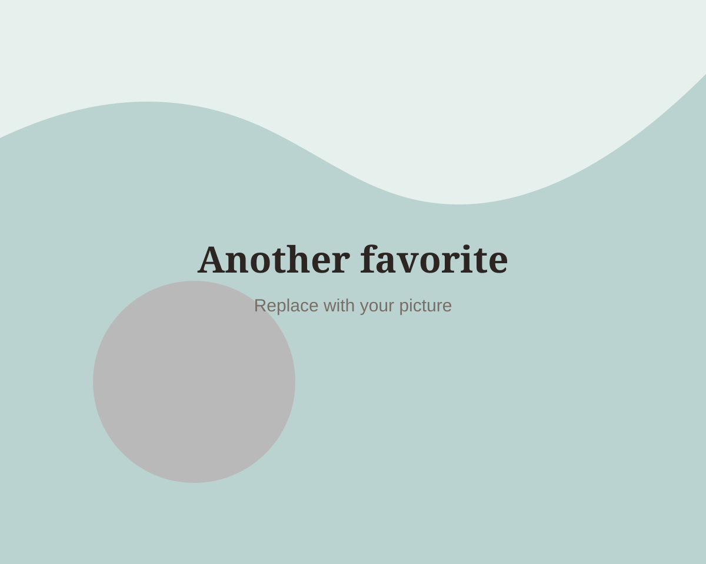

A tiny word / Question 03
What do I always call you?
A tiny word, a whole feeling. This door is very sentimental about this one.
Next page
A tiny word / Question 03
A tiny word, a whole feeling. This door is very sentimental about this one.
Next page